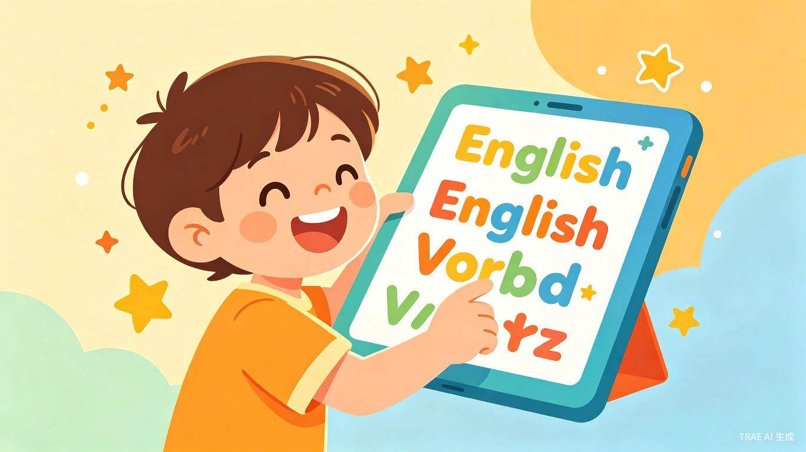
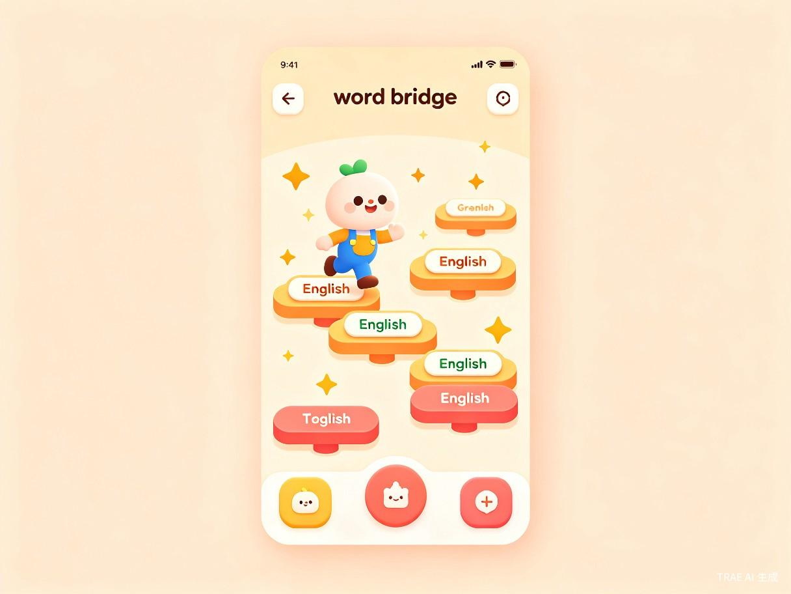
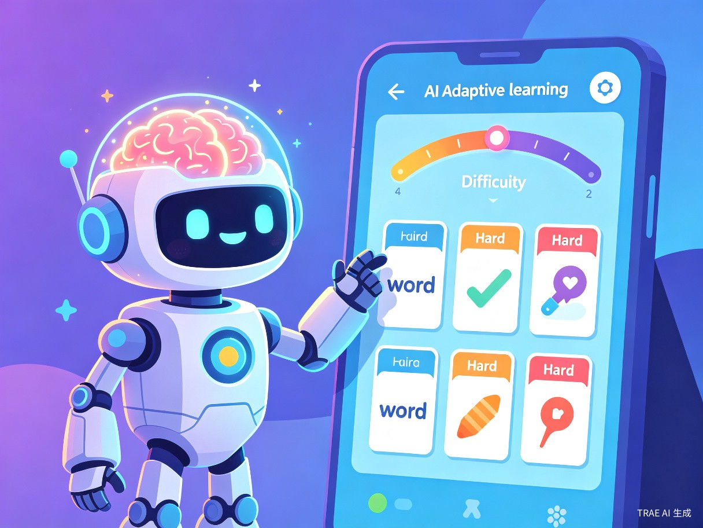
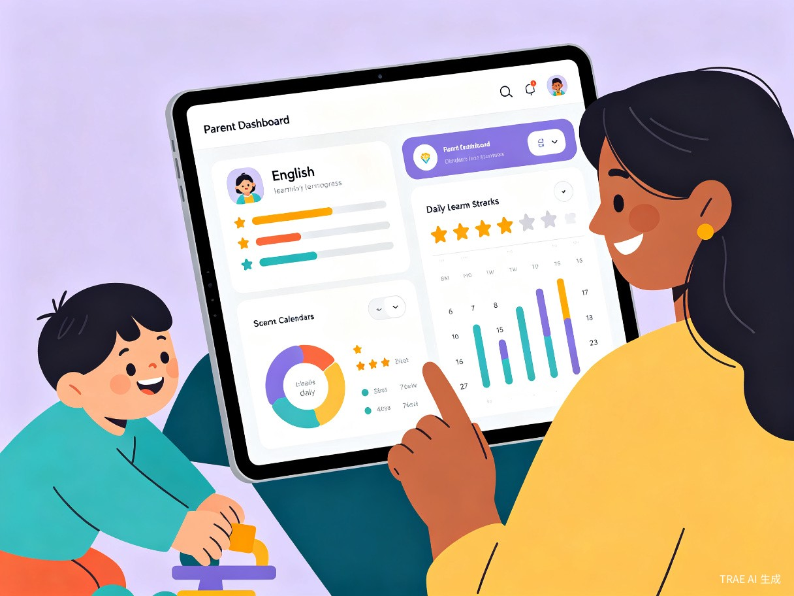
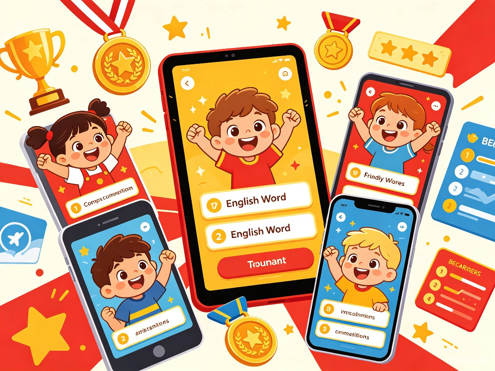

WordStar（单词星球）是一款面向小学低年级（1-3年级）小朋友的英语单词闯关游戏 App。它将英语单词学习融入游戏化的冒险闯关体验中，让孩子在"打怪升级"的过程中自然而然地记住单词，彻底告别死记硬背。
小朋友觉得背单词枯燥乏味，传统"读-写-背"的方式难以维持注意力，导致记忆效率低下、学习兴趣丧失。家长督促背单词时容易引发亲子矛盾，形成"越逼越不想学"的恶性循环。
小朋友天生喜欢玩游戏——游戏中的即时反馈、成就感激励、社交竞争等机制，恰好是高效学习的核心要素。如果能把单词学习变成孩子"主动想玩"的游戏，学习自主性和记忆效果都会大幅提升。教育心理学研究也表明，游戏化学习（Gamification）能显著提升学习动机和知识留存率。
移动端 App（iOS / Android），支持平板和手机。未来可扩展为微信小程序版本，降低使用门槛。
这个年龄段的孩子对游戏有天然的亲近感，但对"学习任务"容易产生抵触。他们需要的是有趣、有成就感、有即时反馈的学习方式。
家长是 App 的购买决策者和监督者。他们关心孩子的学习效果，希望看到可量化的进步，同时也希望减少因督促学习带来的亲子冲突。
孩子放学回家，面对英语单词作业表现出抗拒情绪，家长反复催促无效，双方情绪升级。
家长引导孩子打开 WordStar，孩子以为是"玩游戏"欣然接受，实际在完成单词学习任务。
孩子在闯关过程中反复接触、认读、拼写单词，游戏机制驱动主动重复，不知不觉完成记忆。
闯关结束后，家长在 App 中查看孩子的学习数据报告，了解掌握情况，亲子关系更加和谐。
传统单词学习依赖反复抄写和机械背诵，缺乏趣味性和互动性。孩子注意力集中时间短（6-9岁儿童平均专注力仅15-25分钟），单调的学习方式很快让他们失去兴趣。
没有科学的复习机制，孩子今天背的单词明天就忘。家长无法追踪孩子到底掌握了多少，也不知道哪些单词需要重点复习。
家长督促背单词时，孩子哭闹、拖延、敷衍，家长焦虑、愤怒，形成恶性循环。学习变成亲子关系的"战场"，家庭氛围紧张。
每个孩子的词汇基础和学习节奏不同，但现有工具大多采用"一刀切"的内容推送，无法针对薄弱环节进行精准强化。
孩子扮演小宇航员，在不同星球间穿梭。每个星球对应一个单词主题（动物、水果、颜色等），通过看图选词、听音辨词、拼写挑战等关卡推进剧情，解锁新星球。
类似消消乐的休闲玩法，将英文单词与中文释义、图片进行配对消除。轻松有趣，适合碎片时间复习已学单词。
匹配同龄小伙伴进行实时单词对战，比拼谁能在限定时间内正确回答更多单词题目。排行榜和段位系统激发竞争意识。
孩子用学过的单词组合创作简短故事或句子，AI 辅助生成趣味插图。让单词从"认识"升级为"会用"。
每天推送个性化复习任务，完成连续打卡获得特殊奖励。结合艾宾浩斯遗忘曲线科学安排复习节奏。
精心设计的关卡系统融合了看、听、说、写四大维度。每个关卡都有独特的故事情节和挑战机制——从"帮小猴子找到香蕉"到"在海底世界识别海洋动物"，单词学习变成了一场精彩的冒险旅程。即时反馈和丰富的动画效果让每一次正确回答都充满成就感。

内置 AI 引擎实时分析孩子的答题数据，自动识别薄弱单词和掌握程度，动态调整题目难度和复习频率。学得快的孩子可以加速闯关，需要更多练习的孩子会获得额外巩固训练，真正做到"因材施教"。

家长专属的数据看板展示孩子的学习进度、单词掌握率、每日学习时长、连续打卡天数等关键指标。系统还会生成每周学习报告，标注需要重点关注的知识点，让家长从"焦虑督促者"变成"智慧陪伴者"。

孩子可以邀请同学或匹配在线小伙伴进行单词对战。段位系统、排行榜、成就勋章等社交元素激发孩子的胜负欲和荣誉感。适度的竞争让学习不再是"一个人的苦差事"，而是"和小伙伴一起进步的乐趣"。

中国 K12 英语教育市场规模超千亿，低龄段（小学）英语启蒙需求旺盛。游戏化学习产品在家长群体中接受度高，付费意愿强。采用"免费基础 + 会员解锁"模式，可快速积累用户并实现商业变现。参考 Duolingo 等成功案例，游戏化语言学习产品具备极高的用户粘性和增长潜力。
AI 驱动的个性化学习路径比传统"一刀切"方式效率提升 3-5 倍。游戏化机制将被动学习转化为主动探索，记忆留存率从传统方式的 20% 提升至 70% 以上。科学复习算法确保孩子在最佳时间节点巩固记忆，避免"学了就忘"的浪费。
缓解因学习引发的亲子矛盾，让家庭氛围更加和谐。缩小城乡教育差距——优质的游戏化学习工具让偏远地区的孩子也能获得有趣的英语启蒙体验。培养孩子从小对英语学习的积极态度，为未来的语言学习和国际视野打下坚实基础。
用游戏的力量重新定义单词学习。不是让孩子"坚持"背单词，而是让孩子"忍不住"想学单词。当学习变成冒险，每个单词都是一颗等待被发现的星星。